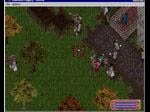

{kind=link}

| Page 1 | Page 2 |
These screenshots were all taken during the E3 pre-alpha test which lasted from May 13th to May 20th of 1996. The graphics in the game have changed substantially since then, and as such these screenshots are not representative of what the beta or final g ame will look like. Note that some of these pictures are reproduced on the Look Back page.
|
|||||
| Blocking the Bridge of Death | The streets are paved with gold! | More of the same (I helped a little) | |||
| Compassion at the temple (where dead players respawned) | Yes, an orc with a backpack | The developers having a little fun with us (player-controlled Hellhound) | |||
|  | |||||
| Quelling an Orc Captain uprising | Planning the pantsless invasion (we were considering armless here) | More Orc Captains ( fullscreen unavailable) |
|||
 |
|||||
| It wasn't called the Bridge of Death for nothing | A false rumor of a meeting with Lord British | The Armor Tournament | |||
| More from the tournament | Receiving my armor | Taking my new armor out for a stroll | |||
 |
 |
||||
| Dead Newbies | Trying to find a way outside the barrier | Finding proof that it was possible | |||
| A green (?) orc in the temple | Another gratuitous shot | Some toys from outside the barrier | |||